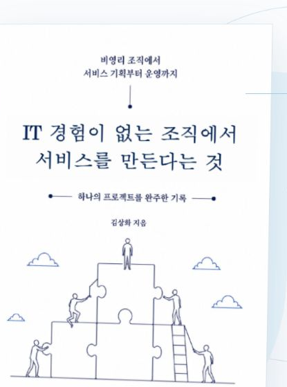

필요를 구체화하고,
담당자를 연결하고,
운영 가능한 결과로 만듭니다.
화면 설계와 함께 범위·일정·협력사·운영 정책·보안 조건을 관리해 프로젝트가 실제 서비스로 이어지게 합니다.
핵심 역량
사용자와 운영 조직의 필요를 서비스 구조로 정리하고, 일정·협력사·보안·운영 조건을 함께 관리해 결과를 만듭니다.
화면 설계와 함께 범위·일정·협력사·운영 정책·보안 조건을 관리해 프로젝트가 실제 서비스로 이어지게 합니다.
가치지음 멤버십 기능을 추진하며 서버·네트워크·정보보안·개인정보보호 업무도 담당하고 있습니다.
↗요구사항과 정책을 정리하고, 이해관계자를 조율하며, 실제 운영에서 생기는 예외까지 확인합니다.
↗초기에는 직접 문제를 풀되, 이후에는 담당자·의사결정권·검토 시점을 명확히 나눠 팀이 지속해서 실행할 수 있도록 합니다.
대표 사례
신규 서비스 총괄, 관리자 기능, 조직 IT 운영까지 서로 다른 환경에서 맡아온 역할입니다.
 회원 운영
회원 운영회원가입과 관리자 CMS를 실제 운영할 수 있도록 정책·화면·개발 협업을 주도하고 있습니다.
신규 서비스의 기획부터 개발·검수·출시·운영 준비까지 총괄했습니다. 2024년 3월 10일 출시했습니다.
서비스 운영 기반이 되는 서버·네트워크·업무 도구·보안·개인정보보호를 담당합니다.
요청자와 처리자의 실제 업무를 분석해 접수·배정·처리·통계 구조를 다시 설계했습니다.
공익 서비스 · 조직 시스템 · 현장·모바일
경력
조직 내부 운영을 이해한 뒤 서비스 기획과 프로젝트 관리로 역할을 확장했고, 현재는 조직 IT·보안까지 함께 담당합니다.
나의AAC 총괄 PM, 가치지음 멤버십 기능 추진, 재단 웹서비스 운영과 함께 서버·네트워크·업무 도구·정보보안·개인정보보호를 담당합니다.
서비스 의사결정부터 노트북·계정·네트워크 문제와 보안 자문까지, IT와 관련된 일이 생기면 동료들이 먼저 찾는 역할을 해왔습니다.
서비스 PM조직 IT정보보안개인정보보호LG U+ 관련 서비스, 온라인 보험, 한살림 장보기·생활쇼핑 등 여러 고객사의 디지털 서비스에서 요구사항·정책·화면·운영 흐름을 기획했습니다.
서로 다른 산업의 고객·사용자·개발 조건을 짧은 시간 안에 이해하고, 화면과 정책 문서로 구체화했습니다.
웹·모바일 기획고객 협의화면 설계미세먼지 앱 서비스와 버스터미널 안내 프로그램 개선 등 모바일·현장 서비스의 요구사항과 화면, 개발 협업을 담당했습니다.
모바일 앱과 키오스크처럼 사용 환경이 분명한 서비스에서 기획과 개발 사이의 실행 조건을 조율했습니다.
앱 서비스현장 서비스개발 협업2011.04.11–2012.12.31(주)그린맨파워 소속 · 엔씨아이티에스 파견 · 운영팀 주임
2013.01.01–2019.12.01(주)엔씨아이티에스 · 개발실 기획팀 과장
같은 근무지에서 사내 IT 서비스 운영으로 시작해 프로젝트 관리로 역할을 확장했습니다. 서비스데스크, 전자결재, 평가, 연말정산, 자산, 출입통제, 의료원 모바일 웹, 프로야구단 관련 서비스 등을 담당했습니다.
8년 7개월 동안 같은 현장의 업무와 사람을 깊이 이해하며 운영자에서 프로젝트 기획·관리 책임자로 성장했습니다.
IT 운영프로젝트 관리사내 시스템협력사 관리업무 방식
연차나 직책보다 문제 해결을 먼저 봅니다. 기준을 세워 팀의 방향을 맞추고, 현장에 빈틈이 생기면 직접 메우며 끝까지 운영 가능한 상태를 만듭니다.
무엇을 먼저 해결해야 하는지, 지금 결정할 것과 검증할 것을 구분합니다.
사용자 흐름뿐 아니라 정책·데이터·예외·관리자 운영까지 한 구조로 봅니다.
기획·개발·운영·보안·외부 협력사의 언어를 실행 가능한 기준으로 맞춥니다.
출시를 끝으로 보지 않고 권한·문의·장애·개선 요청이 이어지는 조건을 준비합니다.
역량의 균형
프로젝트 관리와 서비스 기획을 중심으로 운영·보안·기술 협업까지 역할을 넓혀 왔습니다.
강점과 경계
검증과 기록
업무 피드백과 수상 이력, 책으로 정리한 프로젝트 경험을 통해 일하는 방식과 결과를 함께 확인할 수 있습니다.
주어진 역할을 넘어 필요한 일을 찾아 추진하고, 관계자와의 소통을 통해 끝까지 결과를 만들어 내는 사람.2022년 업무 피드백 요약

프로젝트 기록
비영리 조직에서 신규 서비스를 기획하고 출시·운영하기까지, 프로젝트 관리 과정에서 내린 판단과 시행착오를 한 권의 기록으로 정리했습니다.
책 소개 보기다음 대화
서비스 기획, 프로젝트 운영, 조직 IT 사이의 복잡한 문제를 함께 풀겠습니다.